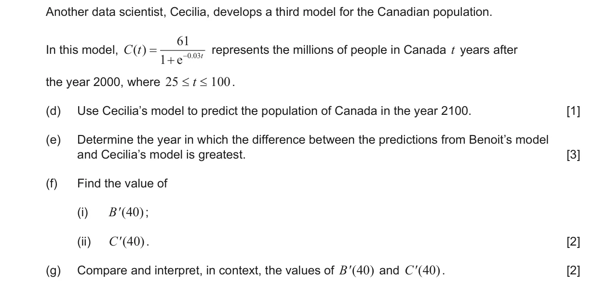
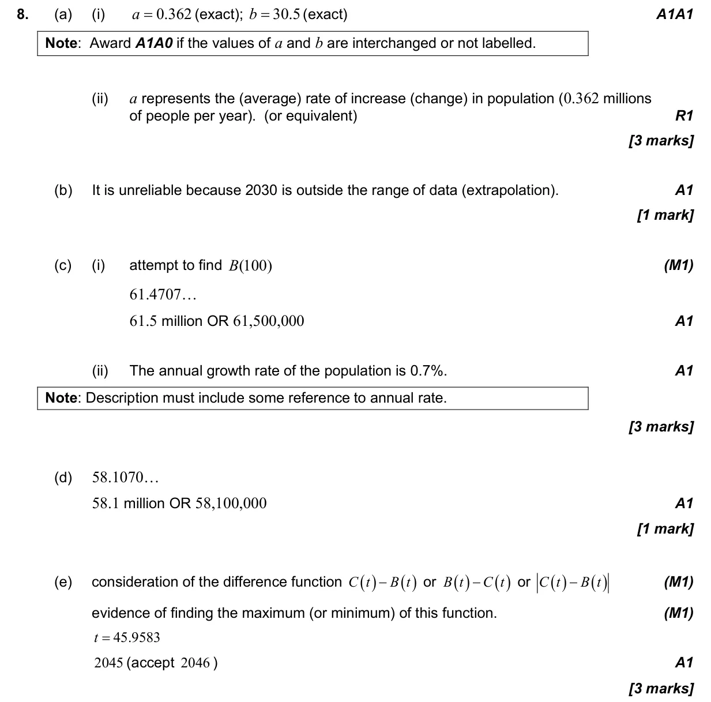
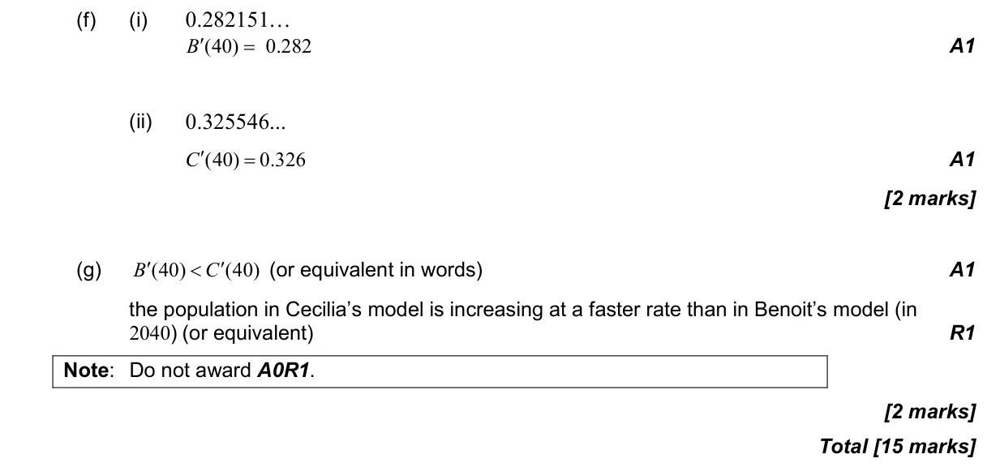

15 marks P2 TZ1 Section B Calculator 4.4 Pearson's, scatter diagrams and equation of y on x2.9 Exponential and logarithmic functions5.1 Introduction to calculus2.4 Key features of graphs2.3 Graphs of functions5.6 Differentiating polynomials n in Q, chain, product and quotient rules Question Hide breakdown abcdefg Markscheme 